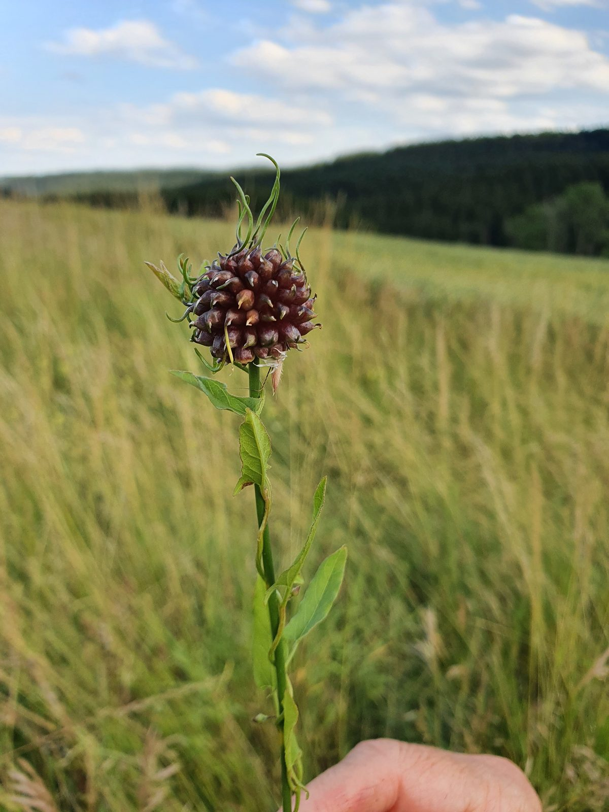

Einzelcoaching –
dein persönlicher Weg
Mehr als Coaching-Stunden: eine umfassende, individuelle Begleitung auf Körper-, Geist- und Seelenebene – mit Zeit, Aufmerksamkeit und Raum für deine Entwicklung.
Was Einzelcoaching bei mir bedeutet
Einzelcoaching ist bei mir keine Sammlung von Einzel-Sitzungen. Es ist eine vollständige Begleitung deines Weges – individuell, intensiv und auf allen Ebenen deines Seins. Vom ersten Gespräch bis zum letzten Monat bin ich an deiner Seite.
Ich schaue mit dir dorthin, wo deine Themen ihren Ursprung haben: auf wiederkehrende Muster, auf Ängste, auf Erschöpfung. Nicht mit Druck, sondern mit Ruhe, Klarheit und Wärme.

Was in deinem Coaching enthalten ist
Das Einzelcoaching umfasst weit mehr als unsere gemeinsamen Sitzungen:
📱 Intensiver WhatsApp-Service
Du hast täglich die Möglichkeit, mir Fragen zu stellen – per Sprachnachricht oder Text. Ich antworte persönlich und zeitnah. Das bedeutet: Du bist nie allein mit dem, was in dir aufsteigt. Dieser Service ist ein zentraler Bestandteil des Coachings, weil Veränderung nicht nur in Sitzungen stattfindet, sondern im Alltag.
🎓 Inklusive: Zugang zum Kraftkurs
Als Einzelcoaching-Klient erhältst du vollständigen Zugang zum 3-Wochen-Onlinekurs „Kraftkurs“ – mit allen Live-Sitzungen, Gruppenbegleitung und Inhalten. So hast du nicht nur individuelle Begleitung, sondern auch die Gemeinschaft und die Struktur des Programms.
🌿 Wildkräuterführungen & besondere Erlebnisse
Natur tut gut. Deshalb beinhaltet das Einzelcoaching auch die Teilnahme an Wildkräuterführungen und anderen besonderen Aktivitäten, die ich für meine Coaching-Klienten anbiete. Draußen zu sein, verändert oft den Blick auf das, woran wir gerade arbeiten.

Ein Eindruck von den Wildkräuterführungen
🧭 Individuelle Sitzungen
Regelmäßige persönliche Coaching-Einheiten – online oder in Präsenz – die vollständig auf deinen Weg, deine Themen und dein Tempo abgestimmt sind.
Dauer: 3, 6 oder 12 Monate
Echte Veränderung braucht Zeit. Deshalb biete ich das Einzelcoaching in drei Zeitrahmen an:
In unserem kostenfreien Kennenlerngespräch finden wir gemeinsam heraus, welcher Rahmen für dich am stimmigsten ist.
Was wir gemeinsam angehen
- Ängste und innere Unruhe – was dahinter liegt, statt nur an der Oberfläche
- Tief sitzende Glaubenssätze und unbewusste Muster
- Chronischer Stress, Erschöpfung und Energiemangel
- Selbstzweifel und fehlendes Vertrauen in dich selbst
- Sinnsuche und fehlende Ausrichtung im Leben
- Körperliches Unwohlsein mit emotionalen oder energetischen Wurzeln
Häufige Fragen
Wie lange dauert das Einzelcoaching?
Das Einzelcoaching gibt es in drei Zeitrahmen: 3 Monate für einen intensiven Impuls, 6 Monate für mehr Zeit zum Verankern oder 12 Monate für eine lange, ruhige Begleitung. Welcher Rahmen passt, klärt sich im kostenfreien Kennenlerngespräch.
Was ist im Einzelcoaching enthalten?
Regelmäßige individuelle Sitzungen (online oder in Präsenz), täglicher persönlicher WhatsApp-Support, vollständiger Zugang zum 3-Wochen-Onlinekurs „Kraftkurs“ sowie Wildkräuterführungen und weitere besondere Erlebnisse in der Natur.
Dein individueller Weg beginnt hier
In einem kostenfreien Gespräch schauen wir gemeinsam, was du brauchst und wie wir zusammenarbeiten können.
Termine montags · Keine Verpflichtung · Vertraulich